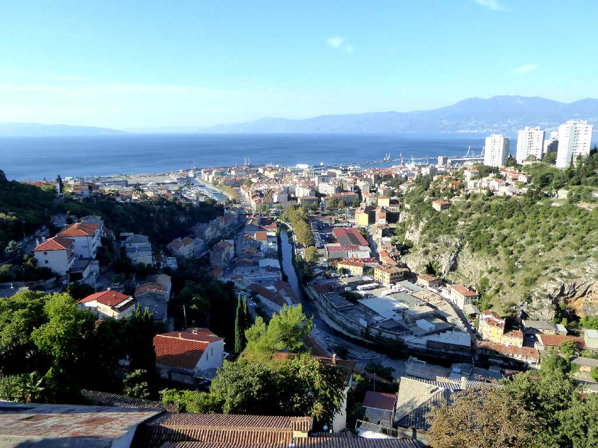
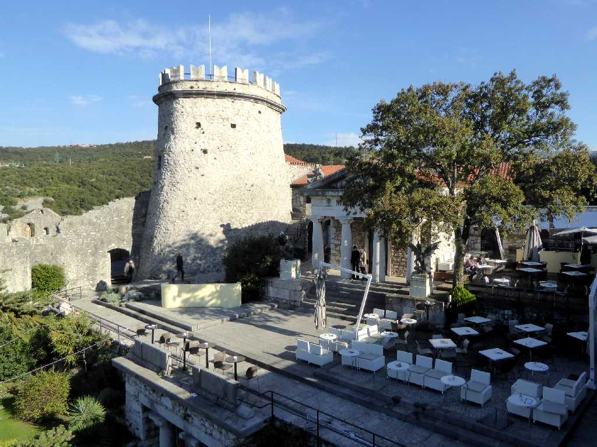
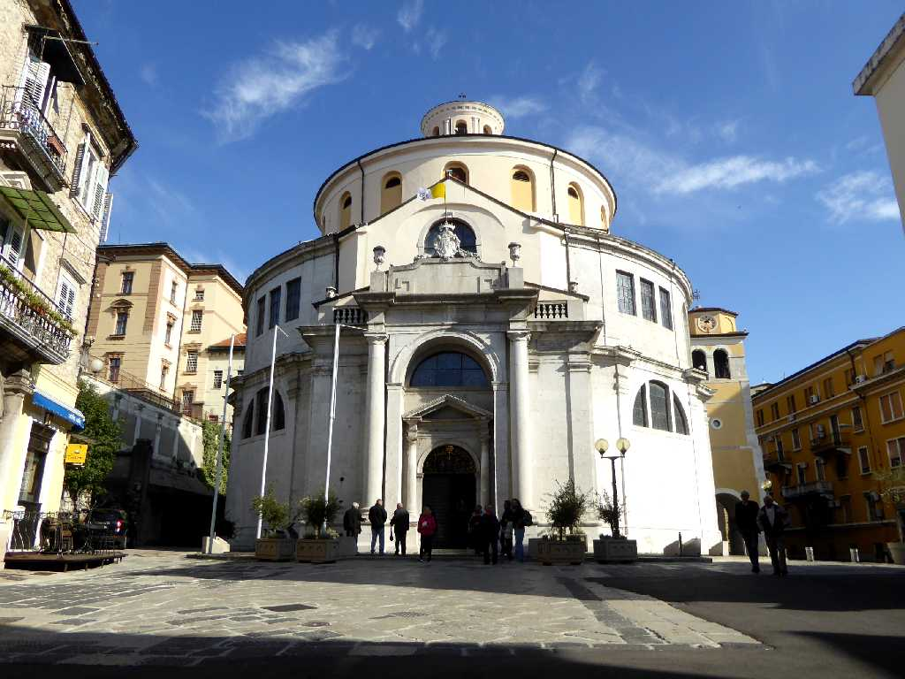
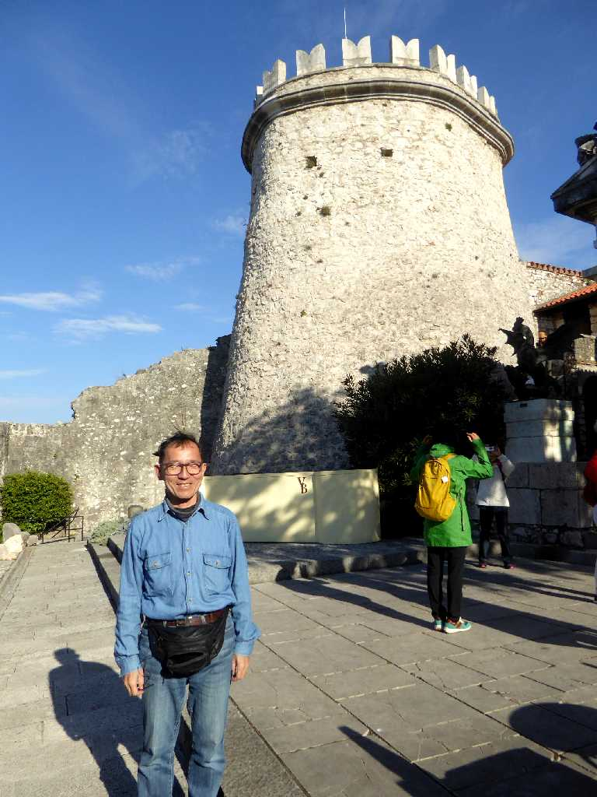

Rijeka Kvarnerski zaljev
ローマ時代より栄えたアドリア海のクヴァルネル湾に面したクロアチア最大の港街リエカをトルサット要塞から望む

Trsatska gradina
オーストリアハンガリー帝国により港を守るため１９世紀に完成したクロアチア最古のトルサット要塞

Katedrala Svetog Vida
１７４４年に創られたバロック様式の聖ヴィート大聖堂

October 9 2016 Rijeka